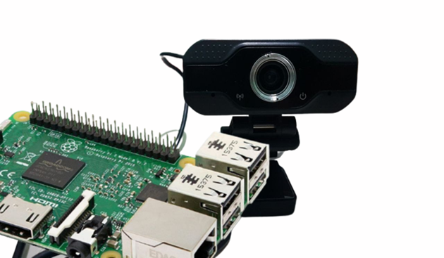
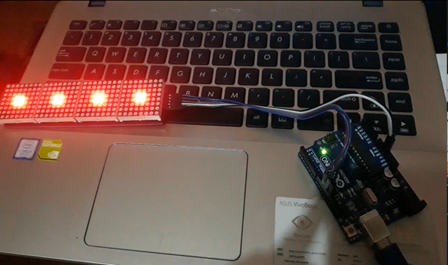

Project 1: Crowd Human Detection

Overview
My final project thesis was about made Internet of Things system. I made a tool for detecting crowd levels, this tool is used to detect the presence of crowd levels around.
I use Raspberry Pi as a Microprocessor to run commands, OpenCV as a media for connects Tensorflow and Machine Learning. To get a human object using the camera as a tool to monitor the surrounding area, if there are humans crowding, the camera will detect and send notifications in the form of images via Telegram connected to the internet network.

Procedure
Input:
The camera will monitor the area around the room.
The camera as a detection tool captures the image of face objects.
Process:
If there is crowd detection, the tool will notify the security.
Objects caught on camera will be sent directly to security via the Telegram application.
Output:
Notification to security if there is a crowd area.
Security will reprimand if they do not follow the health protocol rules.
Software
Project 2: Mobile Speech To Sign Language Translator (Kampus Merdeka)
Overview
We wanted to make a mobile application for people with hearing impairments in public areas. From the journal “Kendala Umum yang Dihadapi Penyandang Disabilities dalam Mengakses Layanan Publik” by Didi Tarsidi, people who suffer hearing loss tend to have difficulties in hearing public announcements. We want to make an app that can translate public announcements into something more understandable by people with hearing impairment. So we trained a machine learning algorithm to distinguish between announcement voice and environment noise. After being able to distinguish them, our mobile application can then record the announcement and save it to Google Cloud Storage, calling the flask api to de-noise the audio, and then calling the Google Speech To Text api to get the transcript of the announcement. Finally the transcript result is returned by the api into the mobile application. We were hoping to build an app that can show sign language images, but for prototype purposes we ended up with text.
Cont.
Dataset Link
Deployed Link
Github Repository
Academic Paper link
Project 3: Running Text Arduino Uno

Overview
“Running Text that I made using the Arduino Uno microcontroller and LED Matrix as the output of the program that has been run on the Arduino IDE”
Procedure:
Connect Arduino to Led Matrix using Female to Male jumper cable
Connect VCC module >> Pin 5V
Connect GND module >> GND
Connect DIND module >> Pin 11
Connect CS module >> Pin 10
Connect CLK module >> Pin 13
Education
2016 | SMKN 5 Kab. Tangerang - Teknik Komputer & Jaringan
2022 | Universitas Raharja - Sistem Komputer